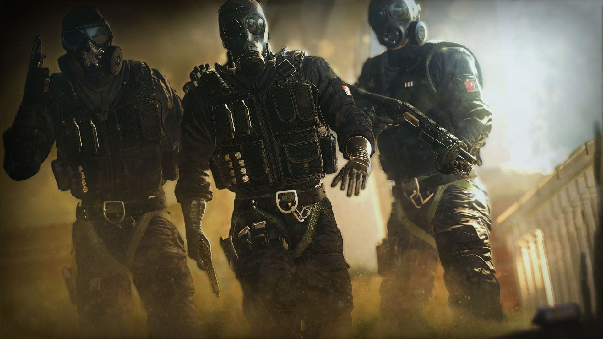

対テロ攻撃部隊「レインボー」の活躍を描くFPSシリーズ『レインボーシックス』。世界での累計販売本数は2,600万本に達し、根強いファンも多い本シリーズの7年振りとなる最新作「シージ」が、ついに発売される。
本作には、実在する5つの組織の特殊部隊員が登場。プレイヤーは、それぞれ独自の技術や装備を持つ彼らから、オペレーター（操作キャラクター）を自由に選んでチームを構成し、困難なミッションに挑むことになる。
対テロ攻撃部隊「レインボー」とは
GSG 9（ドイツ）、Spetsnaz（ロシア）、GIGN（フランス）、SAS（イギリス）、FBI SWAT（アメリカ）——これら、世界の名だたる特殊部隊から選抜された精鋭からなる、対テロ専門のチームが「レインボー」である。
司令官「シックス」の指揮のもと、彼らは世界各地で暗躍するテロリストに立ち向かうのだ。

本作で描かれるミッションは、建物内での近接戦闘に特化したもの。プレイヤーは5人のオペレーターでチームを組み、相手チームと対峙することになる。
シビアな状況だけに、頭を使わない力押しは通用しない。どこに戦力を振り分け、どこから突入するのか。あるいはどこにトラップを配置し、どこを重点的に守るのか……。『レインボーシックス シージ』の戦いでは、何よりも戦術眼が求められるのだ。
観戦モードでさらに戦術眼を高める
2016年2月の「オペレーション・ブラックアイス」アップデートに伴い、PS4／Xbox One／PCの全プラットフォームにおいて、オンラインで観戦モードが利用可能になった。5対5の対戦部屋に11人目のプレイヤーが観戦者として入室し、俯瞰視点や各プレイヤーの視点など、さまざまなカメラを切り替えながら、対戦を観戦することが可能なのだ。
観戦すること自体が楽しいのはもちろん、戦場全体の動きを俯瞰できるこの機能。戦術眼を高め、さらにスキルアップするために、ぜひ有効活用してほしい。
プレイを長期的に楽しめるようにデザインされている「レインボーシックス シージ」には、発売後も盛りだくさんのサポートコンテンツが予定されている。来年は4回にわたってコンテンツパックがリリースされ、最終的には「8人の新オペレーター」「4つの対戦用マップ」、その他新モードやゲームツール、武器などが順次追加されるのだ。
これらのコンテンツは、一部のウェポンスキンを除き、無料でも入手可能になっている。これによりコミュニティ内に格差を作らず、プレイヤーは平等な条件で対戦を楽しめるのだ。さらに、新要素が登場することでゲームバランスが変化するため、より長くゲームを楽しむことができるだろう。
なお、最初のコンテンツパック「オペレーション・ブラックアイス」には、カナダの特殊部隊JTF2出身のオペレーター2名、新マップ、その他プレイヤースキンなどのコンテンツが収録されている。